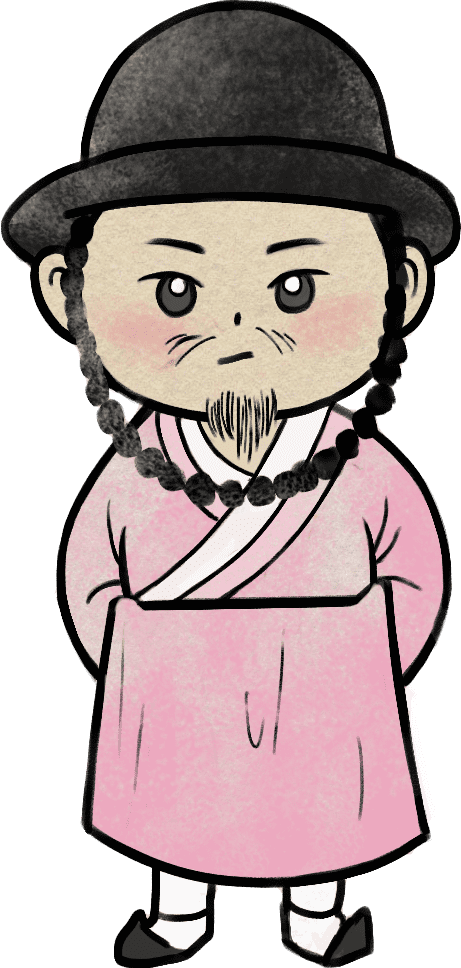

성품 유형지
율곡 이이
"청렴결백의 인간화! 충신"

당신은 율곡 이이와 비슷합니다. 당대 사회의 결점을 해결하고 개선하기 위해 다른 학자들과 의견을 나누고 개혁적인 정책을 펼쳤던 것처럼 당신도 집중력이 강하며 맡은 업무에 책임감이
강하고 그것을 신중하게 해결하되 실수는 즉각 수정하는 편입니다.
또한 문제를 객관적으로 바라보고 사사로운 마음 없이 사람과 사물을 대했던 이이처럼 당신 또한 사건 해결에 현실성을 중시하며 원리, 원칙에 맞게 잘 짜인 해결책을 강구합니다.
뿐만 아니라 율곡 이이가 눈치 보지 않고 곧이곧대로 행동하며 직언을 하는 편이었던 것처럼 당신도 직설적으로 말하는 편이기에, 겉보기엔 다소 차가워 보인다는 말을 종종 듣는
편입니다.
남의 눈에 띄는 것을 그다지 선호하지 않으며 남들이 자신의 일에 참견하는 것을 싫어하는 편이지만 덧붙여 잘못한 것은 잘못했다고 깔끔하게 인정합니다. 하지만 타인과의 갈등에서 받은
스트레스를 참고 참다가 나중에 터뜨리는 편입니다.
다음
성품 유형지
① 매정하리만치 객관적인 성정
이이는 허례와 허식을 비판하였습니다. 그러나 도덕과 윤리, 예절이라는 이름으로 가장된 위선과 형식, 겉치레가 팽배했던 당시 사회에서 율곡의 이러한 정직한 자세는 사회적으로 통용되기 어려웠습니다. 특히 이준경이라는 원로대신은 율곡을 예절과 근본도 모르는 인간이라고 분을 터뜨리며 이이의 스승 백인걸을 찾아가 항의를 했는데, "자네가 추천한 이 아무개라는 인간이 왜 그 모양인가?" 하고 드러내놓고 역정을 내기도 했습니다. 그러나 사심 없이 사물을 판단하려는 그의 자세는 선조를 매료시켰으며 실제로 합리적인 정책들을 많이 주장하고 문제 해결에도 그를 따라잡을 자가 없었을 만큼 뛰어났다고 합니다.② 마음 깊은 효자
이이는 부모와 조상에 대한 효심이 지극했던 인물이었습니다. 11세 때에 아버지의 병이 위독하자 율곡은 자신의 팔뚝을 베어 흐르는 피를 신음하고 있는 아버지의 입속으로 넣어드렸고, 조상을 모신 사당에 들어가 아버지 대신 자기가 죽도록 해달라고 빌었다고 합니다. 이러한 정성에 하늘이 감동했던지 아버지의 병은 곧 나았다고 전해지며 부모님이 돌아가시자 시묘살이를 정성스럽게 지냈고, 33세 때는 벼슬을 받았으나 외할머니의 병이 위중하다는 말을 듣고는 벼슬을 버리고 강릉으로 떠났을 정도로 가족에 대한 애정이 남달랐다고 합니다.③ 따뜻한 반전매력
율곡 이이는 정이 많은 인물이었습니다. 그는 자신을 공격하다가 파직되거나 탄핵된 인물들이 자신을 비판한 이유를 꼼꼼히 따져보고, 오히려 그들의 석방과 탄원을 요구했습니다. 그는 그의 선배인 퇴계 이황과 서로 다른 견해로 부딪혀 학문적으로 다른 방향으로 나아갔지만 편지 교류 등을 통해 학문 정진을 돕고 서로를 인정한 좋은 선후배였다고 전해지며, 붕당정치로 시류가 바뀌자 앞장서 당쟁 조절에 힘썼다고 합니다. 또한 성혼, 송익필, 정철 등 그의 친우들과 있어 그들과 서로 격려하고 지지하는 긍정적인 상호작용을 통해 결과적으로 학문을 설파하고 제자들도 많이 양성했다고 합니다.
위인소개
율곡 이이는 조선의 문신이자 성리학자이며 현대에도 인정받는 십만양병설을 주장했고 성리학에서의 이기일원론을 밝힌 것으로 잘 알려져 있습니다.
이이는 13세 때 어른들도 따내기 힘든 시험에서 장원 급제를 따내어 시험관뿐만 아니라 여러 사람들을 놀라게 했으며 그의 학문은 날로 깊어져 16세 때에는 더 가르칠
것도 없을 정도였으며, 유교 경서뿐만 아니라 다른 분야의 문헌까지도 통달하여 성리학을 깊이 연구했다고 전해집니다.
이이는 허례허식을 비판하고 솔직하고 냉정하게 말하는 인물이었으며, 개혁적인 포부와 가치관을 지닌 사람으로 상황을 공정하게 판단하고 합리적으로 실행하여 임금의 신임을
받았다고 합니다.
천생연분
세종대왕

견원지간
열경 김시습
세종대왕 : 서로가 서로를 있는 그대로 아껴주며, 서로의 존재와 가치를 인정하는 최상의 궁합입니다.
열경 김시습 : 관계를 놓을 때까지 계속해서 충돌하는 최악의 궁합입니다. 하지만 마음을 비운다면 오히려
편안해 질 수 있습니다.
이전